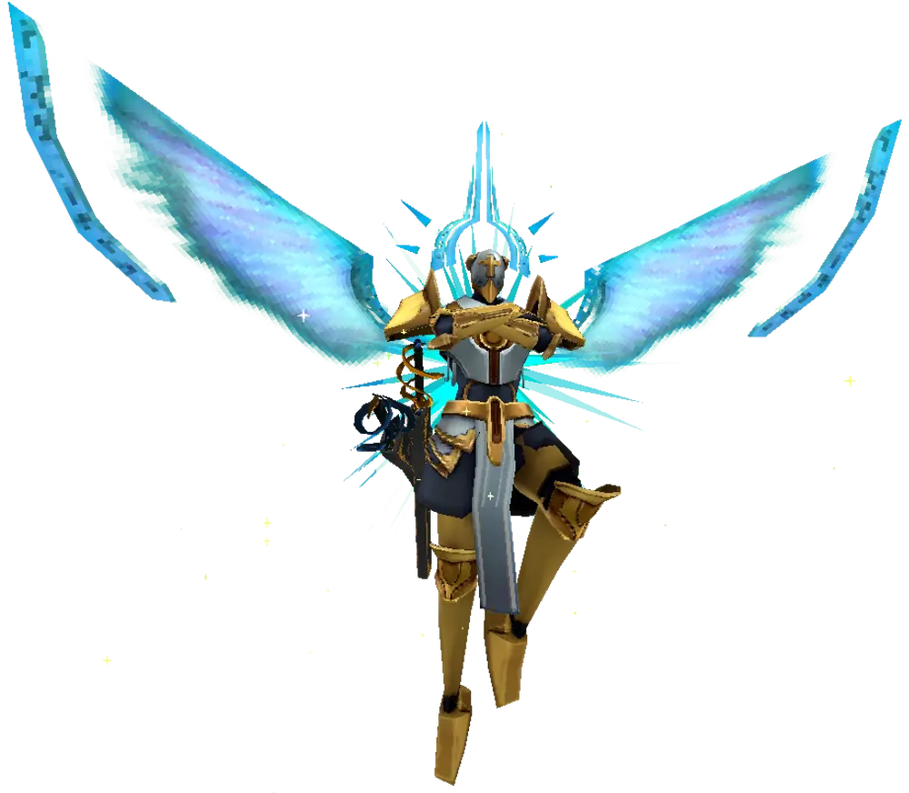

Gabriel, the first Angel V1 encounters, dons silver armor with golden accents. His eyeless helmet is adorned with a golden cross. Sky-blue light constructs form both his angel wings and halo. Gabriel carries ornate twin swords sheathed on his right hip, bearing the phrases "Splendor is Justice" and "Justice is Splendor". Despite his weapons, he chooses to wield golden light constructs such as swords, axes, and spears during the battle.

Following his defeat in the Infinite Hyperdeath end screen, Gabriel questions his loyalty, unable to explain his actions. The Heavenly Council strips him of God's power, branding him a heretic and giving him 24 hours to correct his mistake and kill V1.
Combat Overview
Gabriel is a test of reflexes and precision. He teleports around the battlefield and launches rapid-fire attacks at V1, making him a dynamic and challenging opponent. With a vast and varied moveset, he keeps players on their toes. After taking significant damage, Gabriel enters Phase 2, changing his appearance and enhancing his attacks. On higher difficulties, Gabriel gains new abilities and increased speed, forcing players to adapt to an even faster pace.
Attacks
Phase 1
Greatsword Dash: Gabriel summons a greatsword of light, dashes at V1, and swings twice before throwing the sword. The thrown sword can be parried. In Phase 2, he will teleport before throwing the sword and can teleport to it if it flies too far.
Spear Thrust: Gabriel summons a spear of light, teleports above V1, and thrusts downward. This attack can be avoided by sliding. In Phase 2, he thrusts twice before throwing the spear, and in Brutal, it becomes more unpredictable with horizontal thrusts.
Katana Slice & Thrust: Gabriel summons a katana of light and slices twice before performing a long-distance thrust. This combo only occurs when V1 is close, and cannot be parried. In Phase 2, Gabriel teleports before thrusting.
Axe Throw: Gabriel summons twin light axes and throws them at V1. These axes curve slightly and have minor tracking. The projectiles are challenging to parry due to their small hitboxes and spiraling motion.
Phase 2 (Violent and Above)
Shield of Swords: At the start of Phase 2, Gabriel summons a shield of swords. These can be parried. On Brutal, the swords will teleport around V1 in a ring before pausing and launching inward, creating a deadly trap.
Increased Combo Speed: In Phase 2, Gabriel combines his attacks more rapidly, making it more difficult to predict and dodge his moves.
Enraged
Upon taking enough damage, Gabriel enters an enraged state. His attacks become faster, more aggressive, and harder to evade. The righteous fury of his strikes will test even the most skilled players. His teleportation abilities allow him to quickly close gaps and catch V1 off-guard.
Difficulty Changes
HARMLESS: Gabriel's attacks are slower, and he uses fewer combos. He does not teleport as often, and his shield of swords only appears once per phase.
LENIENT: Slightly faster attacks, and he will teleport more frequently. The shield of swords appears once per phase.
VIOLENT: Gabriel now enters Phase 2 after a set period and gains faster combo execution. The shield of swords appears twice, and he gains a new attack in Phase 2.
BRUTAL: Gabriel is faster overall and his attacks are more difficult to parry. In Phase 2, his attacks become even more unpredictable, and the sword shield attack ends with the swords orbiting V1 before launching inward. He also gains the ability to perform multiple thrusts with his spear.
Strategies & Tips
Master the Parry: Gabriel's projectile attacks are parryable. Mastering the timing for his sword throws and axe throws is key to surviving.
Stay Mobile: Gabriel's teleportation and fast combos make staying still a dangerous option. Keep moving to avoid his lethal thrusts and greatsword dashes.
Watch for Shield of Swords: When Gabriel summons the shield, be ready to parry the incoming projectiles. On Brutal, prepare for the swords to orbit around you before launching inward.
Use Slides: Sliding helps to avoid Gabriel's downward spear thrusts, especially when he teleports above you.
Exploit Phase 1: In Phase 1, Gabriel is more predictable. Focus on dodging his basic combos and counterattacking when possible.